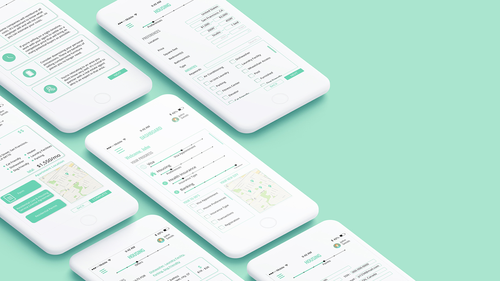
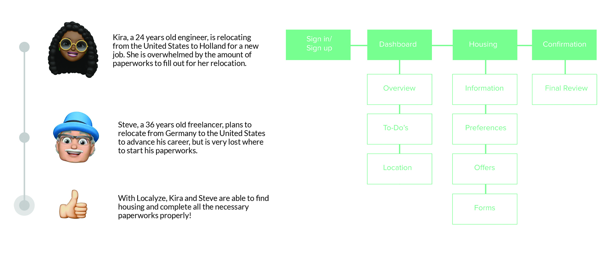
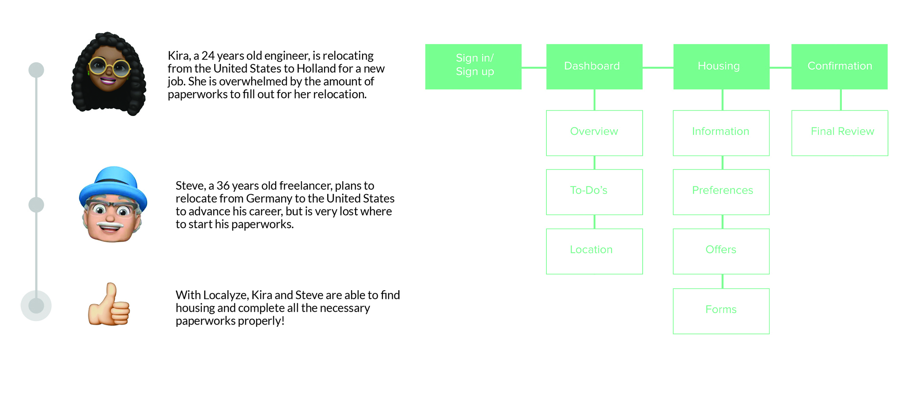
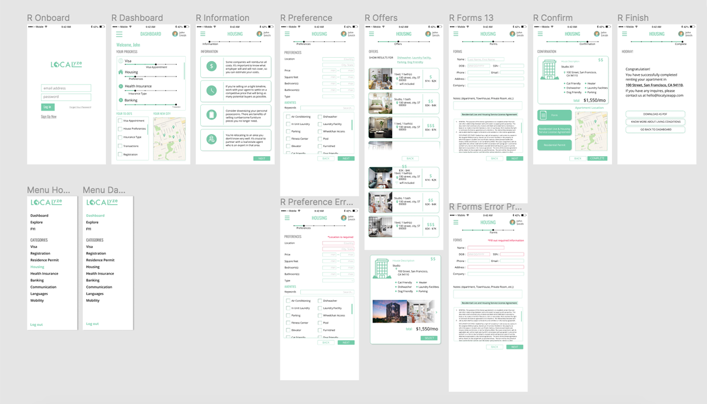

Soeun Yoon
Localyze
Objective
Aims to facilitate the relocation processes for companies and individuals
Tools
Figma, Illustrator
Team Members
Joy Cho, Nicole Lee, Yvonne Wang
Duration
2 weeks
Contact →
Resume →
LinkedIn →
Contact →
Resume →
LinkedIn →


 


Legibility Issues: Text and images were too small on many screens, reducing readability.
Error Prevention: Pages requiring user input (e.g., "Preferences" and "Forms") needed methods to prevent errors.



The primary function of the app, which is providing convenience for the users who are in the process of relocation, should be clear to the users since the instruction matches with the navigational elements on the application. However, the user may be a little hesitant in selecting “Housing” page on the Dashboard since there are a lot of information. The instruction seems clear for the user to click “Next” to proceed to the next page. With the given specification, the user may take some time to select each option. The user may think the page is crowded depending on the amount of information loaded on each page. The slider is helpful for the user to follow each step without skipping one as it matches the subtitles.
Enlarged Components: Slightly increase the size of interface elements for better usability.
Simplified Content: Reduce content on the "Dashboard" page to prevent information overload.
Additional Features: Include background information and contact details for housing owners to facilitate communication. Adding a community element for networking with other users who have relocated to the area could enhance the user experience.
See more
Revenue.io
Overview
Our group chose to design a mobile app to provide notifications for tracking the relocation process and offering better personalization. Localyze offers a comprehensive experience for employers and employees by providing one platform for everything related to immigration, relocation, taxes, and legal documents. My role was to redesign the mobile platform to ensure users have the same accessibility as the desktop version.
Research
Localyze serves two main target groups: 1. Individuals seeking to immigrate or move to a foreign country for employment. 2. Companies accepting international applicants. Localyze directly impacts foreign employees, applicants, and local companies. The app's interface also indirectly affects organizations like insurance companies, banks, and real estate agencies. By using Localyze, individuals do not need to worry about insurance, visas, housing, etc., due to the app's suggestions. This convenience can reduce these companies’ opportunities to market their services, potentially affecting their sales. However, local companies find it easier to hire international employees with less hassle, and international employers benefit from a streamlined relocation process.
Ideation
User Journey
Preliminary research and insights helped to create personas.
Styleguide
Low-Fidelity Prototype
Revision
During critique sessions, our group received feedback on our prototype’s usability, affordances, and aesthetics. Key comments included:
In response, we enlarged text and images across all screens and overlays. We also implemented error indicators by changing input fields to red when required information is missing on the "Preferences" and "Forms" pages.
Hi-Fidelity Prototype
Prototype
1. Landing Page
After logging in, users are directed to the "Dashboard," which provides an overview of the relocation process. It includes a personalized to-do list and a map of the new location. The hamburger menu organizes categories such as visas, health insurance, etc.
2. Housing page
The progress bar at the top displays the housing process, and key information is organized under different topics. Users can set preferences for more accurate searches. Housing offers are sorted by price from low to high. Once a user selects a housing option, they navigate to the "Forms" page to fill out necessary information.
3. Confirmation
Displays the housing summary and purchase details.
Usability Testing